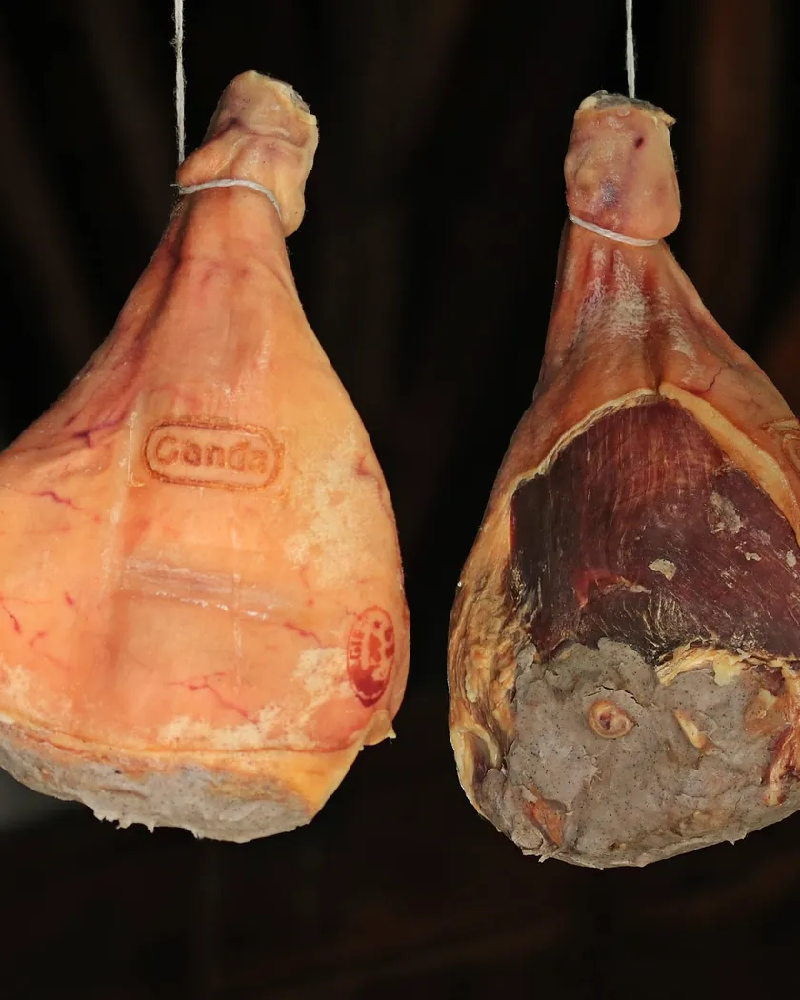
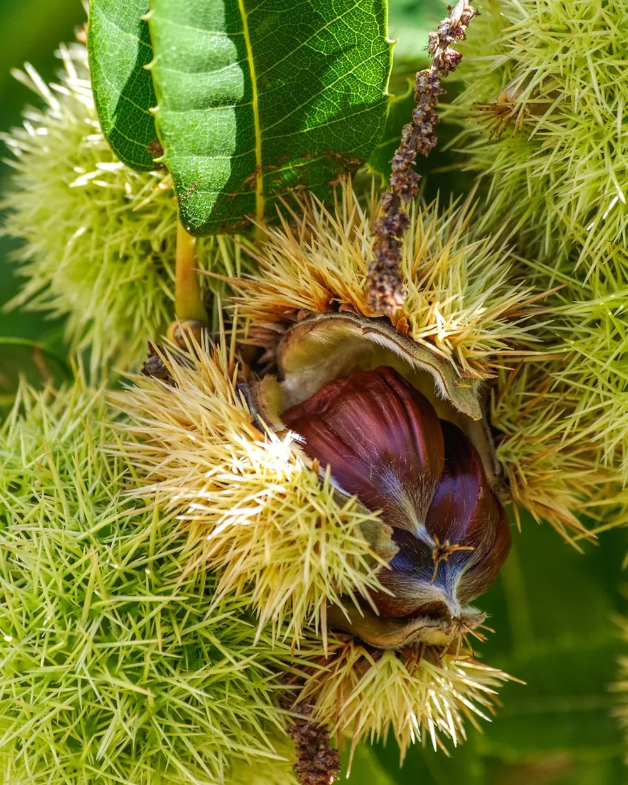

Pourquoi un calendrier ? Parce qu'on ne trouve pas tout, tout le temps. Le figatellu ne se fait qu'en hiver, la châtaigne tombe en octobre, et le jambon attend deux ans.
L'année à la ferme
Choisissez un mois : ce qu'on fait à la ferme, ce qui est à vendre, et où nous trouver.
De l'arbre au séchoir
Des milliers de châtaignes tombées dans la forêt deviennent, en un hiver, quelques rangées de jambons et de coppe pendues dans la cave.
Ramasser
En octobre, les châtaignes tombent. Les porcs mangent celles du sol, nous ramassons les plus belles à la main.
Sécher
Dans la grataghja, la maison du séchoir, un feu de bois de châtaignier brûle doucement pendant des semaines.
Affiner
Les pièces descendent à la cave : quatre mois pour la coppa, deux ans pour le prisuttu.

Les produits
À la ferme le samedi matin, sur les marchés, ou en colis à retirer. Les produits hors saison sont grisés : ils reviennent avec leur mois.
Pas de vente en ligne : appelez-nous ou passez commande au marché, nous préparons votre colis pour le samedi suivant.
La Castagniccia
Des villages accrochés à la pente, des clochers dans la forêt, et des châtaigniers à perte de vue.



Un colis, une visite du séchoir ? Appelez-nous.
On vous attend le samedi matin ?
Piedicroce, Castagniccia. Nous répondons le soir, après les bêtes.